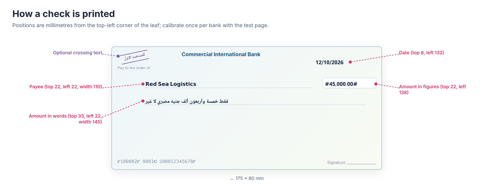
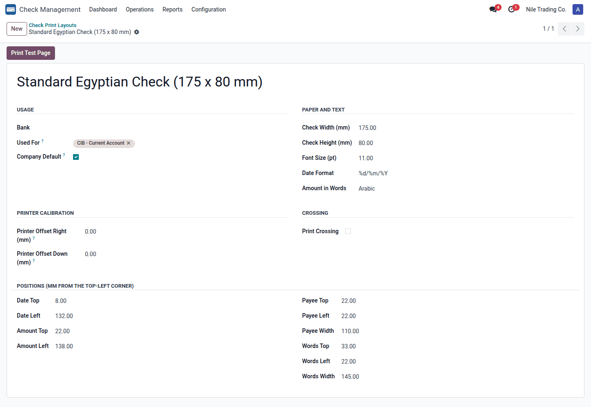
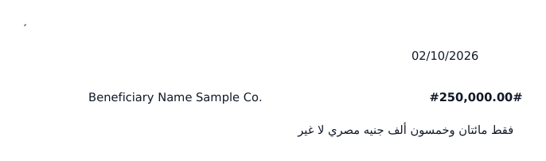
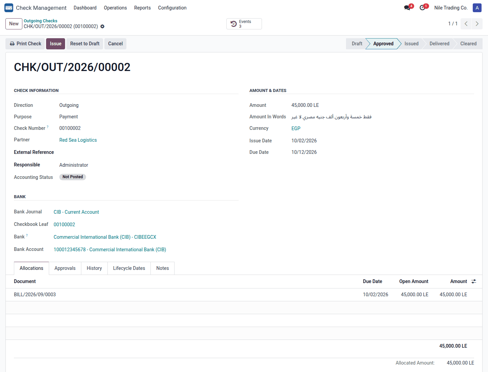
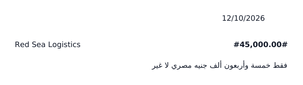

Print outgoing checks straight onto your bank's check leaves, with the amount in words in Arabic or English, one calibrated layout per bank, and full control over reprints.
Add-on for Check Management Arabic & English amount in words Millimetre-precise layouts

User guide (PDF) دليل المستخدم - عربي فصحى (PDF) دليل المستخدم - عربي مصري (PDF)
Paper size, font, date format and the position of every field in millimetres. Link a layout to one or more bank journals, or mark one as the company default.
Commercial Arabic wording as written on Egyptian checks (فقط ... لا غير) or English (... Only), for EGP, USD, EUR, SAR and AED, and the currency's own labels for any other currency.
Only approved checks print. Treasury Officers print once; only a Check Manager can reprint, after a confirmation. Every print is counted and logged in the check history.
%d/%m/%Y) and Amount in Words language.
The layout: paper, calibration and positions

The test page with a sample amount and a dashed leaf outline
The date printed is the check's due date; the payee is the vendor's name; the figures are framed like #45,000.00#.

An approved check with the Print Check button and the amount in words

What reaches the printer: only the values, placed on the leaf
| Role | Printing rights |
|---|---|
| Check User | Sees the layouts and the amount in words; cannot print. |
| Treasury Officer | Prints approved checks once. |
| Check Manager | Reprints, and creates and edits layouts. |
sa_check_management; uses num2words for English words. Version 18.0.1.1.0, license OPL-1.print_count and last_printed_date to checks.Author: Sayed Anwar